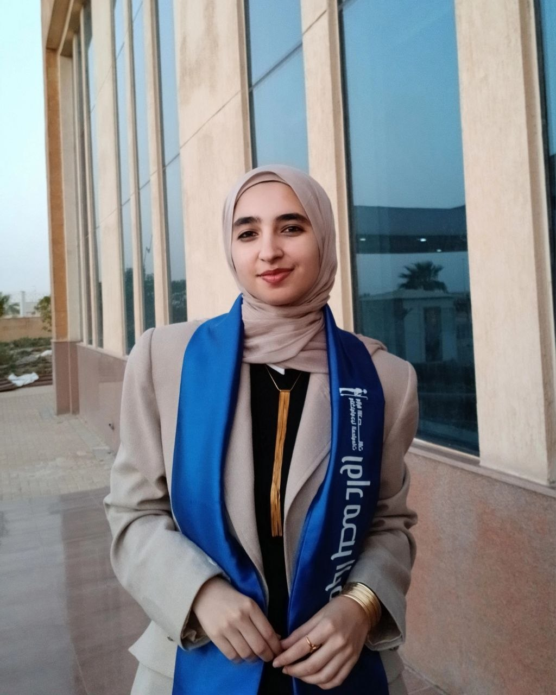

I build machine learning solutions around the problem, not just the model.
I’m Shahinda Ibrahim, a Machine Learning Engineer working with Python and data to build predictive models and make their results easier to understand. My main focus is applied machine learning: starting with the question a project needs to answer, examining the available data, and choosing an approach that fits both.
I care about the steps that make a model worth using: sensible data preparation, meaningful evaluation, and an honest explanation of what the results do—and don’t—tell us. A score on its own is rarely the whole story. I want the work to be clear enough that someone can understand the outcome, question it, and decide what to do next.

Building depth in AI and machine learning.
My training has covered machine learning, data science, and AI engineering. I use that foundation to approach projects practically: understand the data, choose methods for a reason, and evaluate the result carefully.
Machine Learning Track
Focused training in machine learning concepts and applied workflows, including data preparation, model building, and performance evaluation.
AI Engineer
AI-focused training and practical learning centered on developing an engineering approach to AI solutions.
AI & Machine Learning Trainee
Hands-on learning across the machine learning workflow, from data preparation through model evaluation on applied problems.
Data Science Intern
Worked through core data science tasks including data cleaning, exploratory analysis, feature engineering, and model building.
AI Diploma Trainee
Studied machine learning and deep learning foundations through structured coursework and applied exercises.
Data Analysis Intern
Built experience exploring datasets and presenting findings in a way that makes patterns and key takeaways easier to follow.
The tools behind the work.
I keep machine learning at the center of my work. These tools support the stages around it—from understanding data to evaluating a model and presenting the result.
Machine Learning
Python & Data Work
Modeling Frameworks
Visualization & Reporting
Putting Models to Use
Additional AI Exposure
Good modeling starts before the algorithm.
I don’t choose a model just because it is popular. I start by understanding what needs to be predicted or explained, what the data can support, and how success should be measured.